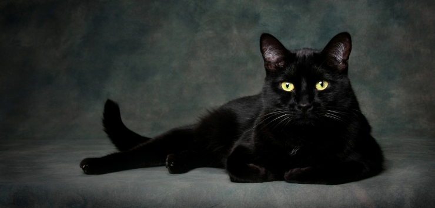

<!DOCTYPE html>
<html>
<head>
    <meta charset="utf-8"/>
    <!-- Ensure that everything scales appropriately on a mobile device -->
    <meta name="viewport" content="width=device-width, initial-scale=1.0, user-scalable=no, minimum-scale=1.0, maximum-scale=1.0">
    <!-- Let's borrow a cool looking Font from Google -->
    <link href='https://fonts.googleapis.com/css?family=Quicksand:300,400,700' rel='stylesheet' type='text/css'>
    <!-- Bootstrap -->
    <link href="css/bootstrap.min.css" rel="stylesheet">
    <!-- custom css rules  -->
    <link rel="stylesheet" type="text/css" href="css/index.css" />
</head>
<body>
       
    <div id="gameArea">
        <!-- This is where the templates defined below will be used -->
    </div>

    <!-- Main Title Screen that appears when the page loads for the first time -->
    <script id="intro-screen-template" type="text/template">
        <div class="container-fluid">
        	<div class="row-fluid">
        		<div class="col-sm-6 col-sm-offset-3">
        			
        			<div class="col-sm-6">
        				<h2>Chat Noir</h2>
        			</div>
        			<div class="col-sm-6">
        				<div class="ctm-btn-title">
				            <button id="btnCreateGame" class="btn btn-primary">CREATE</button>
				            <button id="btnJoinGame" class="btn btn-success">JOIN</button>
				        </div>
			        </div>
        		</div>            
            </div>
        </div>
    </script>


    <!-- JavaScript Libraries -->

    <!-- jQuery! -->
    <script src="libs/jquery-3.1.0.min.js"></script>
    <!-- Bootstrap -->
    <script src="libs/bootstrap.min.js"></script>
    <!-- If Socket.IO is used with Express, then the /socket.io/ path will
    serve the proper Socket.IO javascript files used by the browser -->
    <script src="/socket.io/socket.io.js"></script>
    <!-- app.js is where all the client-side Anagrammatix game logic -->
    <script src="app.js"></script>
</body>
</html>
